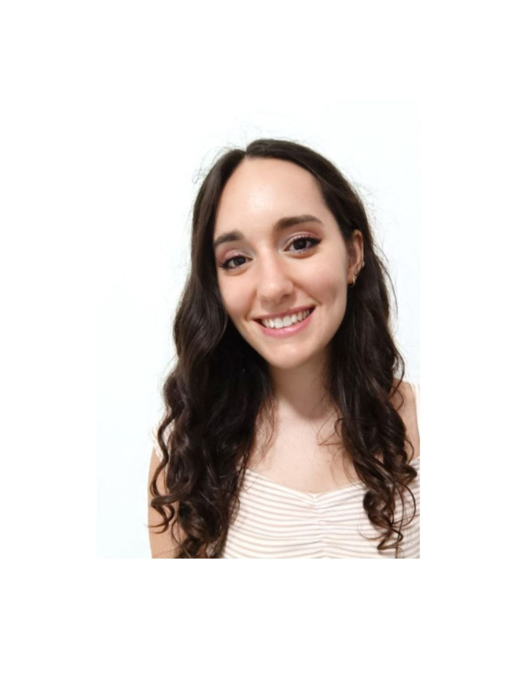

9th October 1996
Ediman Srl
Milano [Apr 2023 - Current]
Helbiz Italia Srl
[Dec 2021 - Mar 2023]
Festival dei Due Mondi
Spoleto [Jun 2021 - Jul 2021]
Taegugki, Toscana Korea Association
[Jan 2021 - Jun 2021]
Tour operator "Rome and Italy - Tourist Services"
Rome [Sept 2020 - Oct 2020]
Russian Christian Academy for the Humanities
Saint Petersburg (Russia) [Feb 2017 - May 2017]
Roma Tre University [2018 - 2021]
110/100 cum laude
Sapienza University of Rome [2015 - 2018]
110/110
Russian Christian Academy for the Humanities [Feb 2017 - Jun 2017]
Scientific High School "Sansi Leonardi Volta" [2010 - 2015]
100/100
[2012 - 2014]
[2021]
[2021]
[2013 - 2014]
HTML5 / CSS
Microsof (Excel / Word / Power Point)
VN video editor / Canva / Filmora / VideoPad Video Editor / Movie Maker / Lightroom / YouCut video editor
Planning skills / Adaptability and Stress Management / Team-work oriented
Verbal and Nonverbal Communication / Open-mindedness / Empathy
Marta De Angelis